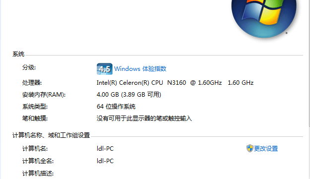
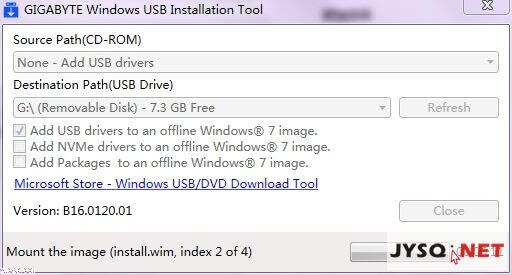
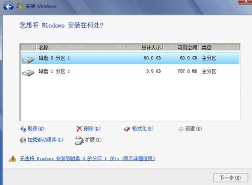

背景
因为急需一台 Windows 操作系统的电脑，装些短期需要用到的软件。而手里有的是一台预装了 Windows 10 操作系统的电脑，配置很差，右键刷新都得等好一会。
安装了 Windows 7 后的截图 
遇到的问题
我下载的两个 Win 7 镜像链接（使用的是迅雷下载）
- cn_windows_7_ultimate_with_sp1_x64_dvd_u_677408.iso [3.42GB]
ed2k://|file|cn_windows_7_ultimate_with_sp1_x64_dvd_u_677408.iso|3420557312|B58548681854236C7939003B583A8078|/
- cn_windows_7_ultimate_x64_dvd_x15-66043.iso [3.34GB]
ed2k://|file|cn_windows_7_ultimate_x64_dvd_x15-66043.iso|3341268992|7DD7FA757CE6D2DB78B6901F81A6907A|/
镜像比较的好找，善用搜索。
问题一： 缺少所需的CD/DVD驱动器设备驱动程序…
解决方法 1：U 盘拔了重插。[尝试失败！]
解决方法 2：U 盘插 USB2.0 接口。 [尝试失败！]
解决方法 3：Windows USB Installation Tool

使用方法：Source Path(CD-ROM) 选择 None - Add USB drivers ；Destination Path(USB Drive) 选择 你的 U 盘；勾选 Add USB drivers to an offline Windows 7 image. ；点击 Start。补充：笔者通过 U 盘的方式安装。
耗时：1 小时
通过方法 3 可以解决「缺少所需的CD/DVD驱动器设备驱动程序…」问题。
问题 二：无法将 Windows 安装到磁盘 0 的分区..

解决步骤：
把MBR磁盘转换为GPT磁盘。
- SHIFT+F10调出命令提示符
- 输入
diskpart - 输入
list disk，列出系统拥有的磁盘 select disk 0，选择0号磁盘clean，清除磁盘，原先的 Windows 10 系统等都会被抹去convert gpt，将磁盘转换为GPT格式- 刷新，继续完成安装。
问题 3 ：安装完毕后的系统无法联网
解决方法:
下载驱动精灵的「万能网卡驱动」。（换台能用的电脑下，用 U 盘拷回来）
问题 4 ：笔记本触控板失灵
下载笔记本厂商官方提供的驱动。笔者的电脑触控板问题未解决，原因：官方推荐使用 Windows 10 操作系统。
问题 5 ：Windows 7 激活失败
原因：操作系统在安装的时候将磁盘转换为了 GPT 格式，普通的激活工具一般无法激活，需要使用 GPT Windows7 激活工具进行激活。搜索关键字「GPT Windows7激活」即可找到多种激活工具。